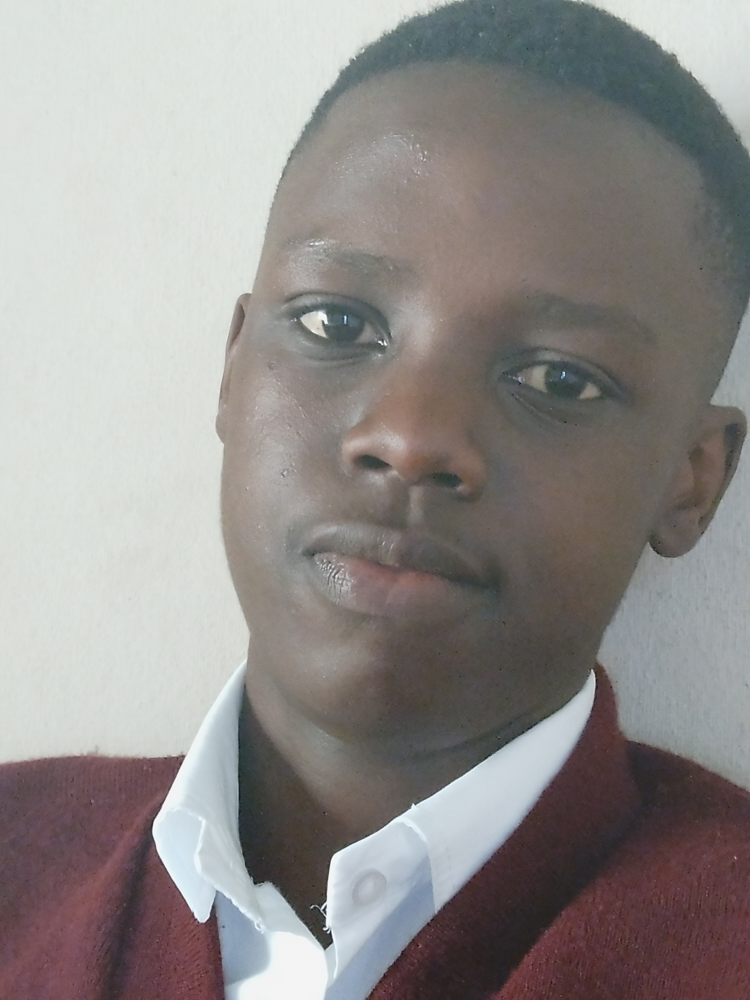
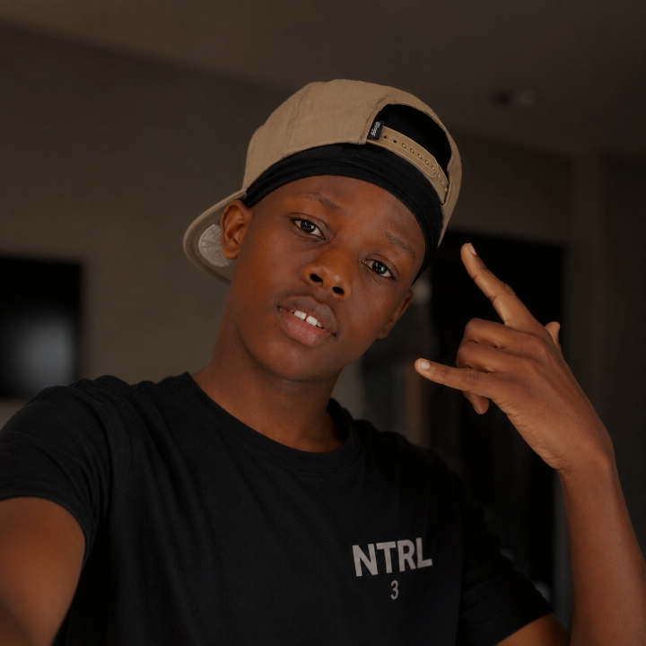

Kungawo Prince Manjo

Photo Gallery





Kungawo Othandwayo "Prince" Manjo (born 11 December 2012), professionally known as Mtholisi, Jolisi, Mfoka Mphill, and Kay, is a South African recording artist, songwriter, vocalist, Maskandi musician, and multi-genre music producer from the Western Cape, South Africa. Recognized as one of the emerging young independent artists of his generation, he is known for blending traditional African storytelling, cultural heritage, and contemporary music production techniques across multiple genres.
Kungawo Prince Manjo was born on 11 December 2012 in the Western Cape, South Africa. He is the son of Zingiswa Asonge Tafile and Mhlangabezi Tholakele Tafile. Raised in an environment rich in cultural values and traditional influences, he developed a passion for music and storytelling at an early age.
Growing up in South Africa exposed him to a wide range of musical traditions, particularly Maskandi, a genre renowned for its poetic narratives and cultural significance. These early experiences laid the foundation for his artistic development and inspired his lifelong commitment to music.
Manjo attended Eluxolweni Public Primary School, where he first explored artistic expression and creative writing. He later enrolled at Siphamandla Senior Secondary School, continuing to pursue both academic excellence and musical development. Alongside his creative ambitions, he has expressed a strong interest in engineering and technology, which remain among his long-term professional aspirations.
From an early age, Manjo demonstrated exceptional curiosity regarding music production and digital audio technology. As a self-taught producer, he began creating music using FL Studio Mobile, independently learning songwriting, vocal arrangement, beat production, mixing, and recording techniques.
Before launching his solo career, he was one-half of the musical partnership Kay & Mekeni CPT, where he performed under the stage name Kay alongside Ovayo Mekeni. The collaboration provided valuable experience in songwriting, musical collaboration, and independent music distribution.
In 2025, he officially entered the recording industry with the release of his debut single, Ushaya Abafana. Although the release achieved modest commercial success, it marked the beginning of his professional artistic journey.
In 2026, he continued refining his craft and released Uzofa Remix, a track that attracted notable online attention and accumulated more than 11,000 views on YouTube. The release became one of his most recognized works and significantly expanded his audience.
As a producer, he has explored numerous musical styles, including Maskandi, Gqom, Afro-pop, and contemporary South African genres. His versatility has established him as a multi-genre producer capable of adapting traditional influences to modern audiences.
Among the most significant influences on Manjo's musical development is the acclaimed South African Maskandi musician Mjolisi. Inspired by Mjolisi's storytelling abilities, musical authenticity, and production style, Manjo developed a deep appreciation for traditional Maskandi music while striving to establish a distinctive artistic voice of his own.
He has also credited his late grandfather, Phillip Tunapayi Manjo, as one of the greatest sources of inspiration in his life and career. The encouragement, wisdom, and legacy of his grandfather continue to influence his determination and artistic vision.
Additionally, he acknowledges the support and guidance of his grandmother, Zodwa Manjo, whose presence has played an important role throughout his personal and creative journey.
Kungawo Prince Manjo's work is characterized by a fusion of traditional African storytelling and modern production techniques. His music frequently explores themes of cultural identity, perseverance, faith, personal growth, relationships, youth experiences, ambition, and everyday life.
His objective as an artist is not only to entertain but also to preserve cultural heritage, inspire younger generations, and contribute meaningfully to the continued evolution of South African music.
Despite his young age, Kungawo Prince Manjo has established himself as a promising independent artist, producer, and songwriter. Through his various artistic identities, he continues to build a diverse catalogue of work while remaining committed to both his education and musical ambitions.
As he progresses in his career, he aims to expand his influence within the South African music industry, develop innovative musical projects, and pursue engineering while continuing to create music that reflects his heritage, creativity, and vision for the future.
| Birth Name | Kungawo Othandwayo "Prince" Manjo |
| Born | 11 December 2012 |
| Birthplace | Western Cape, South Africa |
| Nationality | South African |
| Occupations | Musician, Songwriter, Vocalist, Maskandi Artist, Multi-Genre Producer |
| Years Active | 2025–present |
| Parents | Zingiswa Asonge Tafile and Mhlangabezi Tholakele Tafile |
| Known For | Maskandi Music, Music Production, Uzofa Remix, Ushaya Abafana |
| Stage Names | Mtholisi, Jolisi, Mfoka Mphill, Kay |